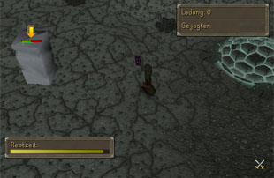
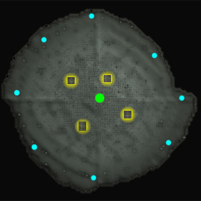
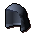
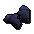
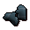
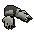
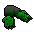

")
Die Faust des Guthix
Einführung | Lage | Voraussetzungen | Erste Schritte | Jagen und gejagt werden | Belohnungen | Entwicklung
Die Faust des Guthix ist für alle Spieler zugänglich. Allerdings sind einige Belohnungen nur für RuneScape-Mitglieder erhältlich. Bitte werdet Mitglied, damit ihr auf diese Belohnungen zugreifen könnt.
Bitte beachtet, dass es sich hierbei um ein 'sicheres' Minispiel handelt. Falls ihr während des Minispiels sterbt, werdet ihr keinen Gegenstände verlieren.
Ihr solltet euch der Gefahr bewusst sein, dass euch Wiedergänger auf dem Weg zur Faust des Guthix angreifen könnten.
Einführung

Die Faust des Guthix ist ein kampfbasiertes Minispiel, in dem ihr mit einem Gegner in einen Kampf verwickelt werdet, bei dem ihr List, Geschick und feste Entschlossenheit beweisen müsst. Spieler, die ihren Gegner niederstrecken und ihm danach lange genug ausweichen können, erwarten eininge tolle Belohnungen.
Lage

Um die Höhlen von Varrock aus zu erreichen, müsst ihr nur der nördlichen Straße aus Varrock in die Wildnis folgen. Wenn die Straße weiter gen Osten führt, müsst ihr nur weiter nach Norden gehen und solltet dann bald den Höhleneingang finden.
Die Wildnis ist ein gefährlicher Ort, der von schrecklichen Wiedergängern heimgesucht wird. Wenn ihr euch zur Faust des Guthix begebt, solltet ihr euch auf eine Auseinandersetzung mit diesen Monstern vorbereiten.
Voraussetzungen
Für dieses Minispiel gibt es keine Voraussetzungen. Ihr solltet aber vielleicht ein paar nützliche Gegenstände mitnehmen:
 |
Rüstzeug Da in diesem Minispiel gekämpft wird, solltet ihr gutes Rüstzeug mitbringen. Seid euch aber bewusst, dass ihr viel herumrennen müsst, sodass eine schwere Plattenrüstung vielleicht nicht die beste Wahl ist. |
||||
 |
Waffe Wenn ihr nur mit euren Fäusten bewaffnet seid, wird es schwierig, siegreich zu sein. Ihr solltet daher eine Waffe mitbringen. Verbrauchte Munition wird euch zurückerstattet, wenn ihr das Spiel verlasst und Runen werden euch zur Verfügung gestellt, ihr müsst euch darüber also keine Gedanken machen. |
Erste Schritte
 Um mitzuspielen, müsst ihr euch zunächst mit Fiara, der Wächterin dieses gesegneten Orts, unterhalten. Man kann sie eigentlich nicht übersehen, da sie ein riesiges Ohrwurm-Ding ist. Sie befindet sich in einer Nische am östlichen Ende der Höhle.
Um mitzuspielen, müsst ihr euch zunächst mit Fiara, der Wächterin dieses gesegneten Orts, unterhalten. Man kann sie eigentlich nicht übersehen, da sie ein riesiges Ohrwurm-Ding ist. Sie befindet sich in einer Nische am östlichen Ende der Höhle. Fiara wird euch erklären, wie man die Faust des Guthix spielt und ebenfalls, dass sie auf die Druiden in ihrer Höhle nicht allzu gut zu sprechen ist.
Wenn ihr euch in der Höhle befindet, zeigt euch ein Balken am oberen Fensterrand an, dass ihr einen Gegenstand tragt, der im Minispiel nicht erlaubt ist. Zum Glück hält sich ein Bankangestellter in der Höhle auf, bei dem ihr diese Gegenstände deponieren könnt.
Nachdem ihr mit Fiara gesprochen und alle unerlaubten Gegenstände deponiert habt, könnt ihr am Minispiel teilnehmen. Begebt euch zum Höhleneingang neben Fiara und bereitet euch auf den Wettkampf vor.
Jagen und gejagt werden
Nachdem ihr die Arena betretet, wird euch ein Gegner zugewiesen, dessen Namen ihr in dem Kasten am oberen rechten Fensterrand sehen könnt. Nach einem kurzen Countdown wird einer von euch als Jäger und der andere als Gejagter eingestellt. Das Minispiel besteht immer aus zwei Runden. Nach dem Ende der ersten Runde werden die Rollen vertauscht.
- Als Jäger müsst ihr einfach nur den Gejagten finden und bezwingen.
- Als Gejagter müsst ihr eurem Gegner ausweichen und so viele Ladungen wie möglich von der Faust des Guthix sammeln.
| Gegenstand | Zweck |
 |
5 Verbandszeug Verbandszeug heilt 150 Trefferpunkte bei Benutzung. Da ihr keine Nahrung mit in das Minispiel nehmen dürft, ist das eure einzige Möglichkeit der Heilung. Benutzt sie weise... |
 |
300 Katalysen-Runen Diese Runen sind ein Ersatz für alle Runen außer den Elementar-Runen, sodass ihr nicht eure eigenen Runen benutzen müsst. |
 |
1.000 Elementar-Runen Diese Runen ersetzen alle Feuer-, Luft-, Wasser- und Erd-Runen, sodass ihr nicht eure eigenen Runen benutzen müsst. |
 |
Tele-Kugel Mit dieser Kugel könnt ihr euch in die Mitte der Arena teleportieren. |
Diese Gegenstände erhaltet ihr ,wenn ihr die Arena betretet. Nach dem Ende der ersten Runde, wenn die Rollen vertauscht werden, erhaltet ihr keinen Ersatz. Jedwede Munition, die ihr verbraucht, erhaltet ihr zurück, nachdem ihr die Arena wieder verlasst (außer sie wurde zerstört oder verbraucht, wie Munition für Karils Armbrust). Ihr müsst eure Pfeile nicht aufsammeln, das würde nur wertvolle Zeit verschwenden.
Die Arena ist groß, rund und enthält einige wichtige Orte.

Stein-Ausgaben
Falls ihr gejagt werdet, müsst ihr einen Stein der Macht mitnehmen. Dazu müsst ihr nur auf eine der Stein-Ausgaben klicken, von denen sich einige in der Arena befinden. Falls ihr vergesst, einen mitzunehmen, seht ihr am rechten unteren Bildschirmrand eine Nachricht.
Die Faust des Guthix
Die Faust des Guthix ist voller Energie, die die Druiden sammeln wollen. Als Gejagter werdet ihr feststellen, dass ihr mehr Ladungen erhaltet, je näher ihr euch an der Faust befindet. Außerdem erhöht sich eure Ausdauer viel schneller, während ihr auf der Faust steht. Dann ist es für euren Gegner allerdings auch viel einfacher, euch zu finden.
Portalkammern
Die Portalkammern können nur betreten werden, wenn ihr der Gejagte seid. Während ihr euch darin aufhaltet, seid ihr für euren Gegner unsichtbar. Ihr könnt euch auch in eine andere Portalkammer teleportieren, indem ihr auf das Portal in der Mitte der Kammer klickt. Jedes Mal, wenn ihr durch die Barriere in eine Portalkammer geht, erhaltet ihr etwas Schaden und die Benutzung eines Teleporters kostet 20 Ladungen aus eurem Stein. Außerdem werdet ihr feststellen, dass ihr dort mehr Schaden erhaltet.
Nachdem ihr eine Portalkammer verlassen habt, müsst ihr 20 Sekunden warten, bevor ihr wieder eine betreten dürft.
Ladungen sammeln
 Um mit eurem Stein der Macht Ladungen zu sammeln, müsst ihr ihn handhaben. Da man dafür beide Hände benötigt und man mit dem Stein nicht angreifen kann, könnt ihr euch nicht verteidigen.
Um mit eurem Stein der Macht Ladungen zu sammeln, müsst ihr ihn handhaben. Da man dafür beide Hände benötigt und man mit dem Stein nicht angreifen kann, könnt ihr euch nicht verteidigen. Eure Fertigkeiten werden immer schwächer, je näher ihr euch an der Mitte der Arena befindet. Außerdem erhaltet ihr etwas Schaden von der Energie der Faust. Wenn ihr in einer Portalkammer steht, erhaltet ihr sogar noch mehr Schaden. Während ihr gejagt werdet, könnt ihr nur die Zauber Rachsucht, Neutralisiert Vergiftung und Traum-Zauber aus dem Mond-Zauberbuch sprechen. Alle Vertrauten haben extrem gesenkte Kampffähigkeiten.
Achtung: Bei 'Faust des Guthix' ist die Wirkungsdauer von Captivatio St. I, II und III sehr viel kürzer als sonst.
Falls es euch gelingen sollte, euren Jäger zu besiegen, werdet ihr feststellen, dass sie einfach wieder am Rand der Arena auftauchen.
Das Spiel gewinnen
Nachdem die beiden Runden gespielt wurden, kehren beide Spieler zur Eingangshöhle zurück und der Spieler, der als Gejagter die meisten Ladungen gesammelt hat, wird zum Sieger erklärt.Falls sich euer Gegner während des Spiels ausloggt, werdet ihr automatisch zum Sieger erklärt und erhaltet einige Ladungen, wenn ihr noch keine gesammelt haben solltet.
Die Anzahl der Ladungen und eure Gesamtstufe nimmt direkten Einfluss auf die Anzahl der Jetons, die ihr als Belohnung erhaltet und mit denen ihr euch fantastische Preise kaufen könnt. Um zu sehen, welche Gegenstände zur Verfügung stehen, solltet ihr euch mit dem Druiden Reggie unterhalten.
Um Jetons zu erhalten, müsst ihr das Minispiel nicht unbedingt gewinnen. Ihr erhaltet auch welche für gute Leistung und wenn ihr es schaft, eine Weile zu überleben.
Belohnungen
Außer den Jetons erhaltet ihr außerdem eine Wertung, die ihr mit anderen Spielern auf der Bestenliste vergleichen könnt. Um dort aufgenommen zu werden, muss eure Wertung mindestens 500 betragen.
Unten findet ihr Einzelheiten zu den Preisen, die ihr euch mit den Jetons kaufen könnt. Diese Gegenstände können nicht gehandelt werden, außer sie sind vollständig entladen (Reggie kann sie für euch entladen). Belohnungen, die zu Staub zerfallen, sobald sie keine Ladungen mehr haben, können nur über das Minispiel erhalten werden.
Druiden-Roben
Wenn ihr einen vollständigen Satz Druiden-Roben tragt, haben eure Zauber Captivatio St. I, Captivatio St. II, Captivatio St. III eine höhere Chance, euren Gegner zu treffen. Diese Roben entladen sich, ähnlich wie Gegenstände aus den Grabhügeln, können aber bei Reggie für ein paar Jetons wieder aufgeladen werden.
| Gegenstand | Benötigte Stufen |
||||||||||||||||||
| Angriffsboni | Verteidigungsboni | Sonstiges | |||||||||||||||||
![[Bild: Stechen]](../../img/main/kbase/table_text/stab1.gif "Stechen") |
![[Bild: Schlitzen]](../../img/main/kbase/table_text/slash1.gif "Schlitzen") |
![[Bild: Schmettern]](../../img/main/kbase/table_text/crush1.gif "Schmettern") |
![[image: Magie]](../../img/main/kbase/table_text/magic1.gif "Magie") |
![[Bild: Fernkampf]](../../img/main/kbase/table_text/range1.gif "Fernkampf") |
|
|
|
|
|
![[Bild: Beschwörung]](../../img/main/kbase/table_text/summoning1.gif "Beschwörung") |
![[Bild: Stärke]](../../img/main/kbase/table_text/strength1.gif "Stärke") |
![[Bild: Gebet]](../../img/main/kbase/table_text/prayer1.gif "Gebet") |
|||||||
![[Bild]](../../img/main/kbase/minigames/hvh/druid_spellcaster_hood.gif) Druiden-Kapuze |
20 10 |
+ 0 | + 0 | + 0 | + 3 | + 0 | + 0 | + 0 | + 0 | + 3 | + 0 | + 3 | + 0 | + 0 | |||||
![[Bild]](../../img/main/kbase/minigames/hvh/druid_spellcaster_top.gif) Druiden-Robenoberteil |
20 10 |
+ 0 | + 0 | + 0 | + 7 | + 0 | + 0 | + 0 | + 0 | + 7 | + 0 | + 7 | + 0 | + 0 | |||||
![[Bild]](../../img/main/kbase/minigames/hvh/druid_spellcaster_legs.gif) Druiden-Rock |
20 10 |
+ 0 | + 0 | + 0 | + 6 | + 0 | + 0 | + 0 | + 0 | + 6 | + 0 | + 6 | + 0 | + 0 | |||||
Kampf-Roben
Wenn ihr einen aufgeladenen Satz Kampf-Roben tragt, besteht eine kleine Chance, dass die Robe für irgendwelche Geistes-, Chaos-, Jenseits- oder Blut-Runen, die für einen zerstörerischen Zauber verwendet wurden, bezahlt. Diese Roben entladen sich, ähnlich wie Gegenstände aus den Grabhügeln, können aber bei Reggie für ein paar Jetons wieder aufgeladen werden.
| Gegenstand | Benötigte Stufen |
||||||||||||||||||
| Angriffsboni | Verteidigungsboni | Sonstiges | |||||||||||||||||
|
|
|
|
|
|
|
|
|
|
|
|
|
|||||||
![[Bild]](../../img/main/kbase/minigames/hvh/combat_robe_hood.gif) Kampf-Kapuze |
20 10 |
+ 0 | + 0 | + 0 | + 3 | + 0 | + 1 | + 1 | + 1 | + 3 | + 0 | + 4 | + 0 | + 0 | |||||
![[Bild]](../../img/main/kbase/minigames/hvh/combat_robe_top.gif) Kampf-Robenoberteil |
20 10 |
+ 0 | + 0 | + 0 | + 7 | + 0 | + 1 | + 1 | + 1 | + 7 | + 0 | + 8 | + 0 | + 0 | |||||
![[Bild]](../../img/main/kbase/minigames/hvh/combat_robe_legs.gif) Kampf-Robenunterteil |
20 10 |
+ 0 | + 0 | + 0 | + 6 | + 0 | + 1 | + 1 | + 1 | + 6 | + 0 | + 7 | + 0 | + 0 | |||||
Kriegs-Roben (nur für Mitglieder)
Wenn ihr einen aufgeladenen Satz Kriegs-Roben tragt, besteht eine kleine Chance, dass die Robe für irgendwelche Geistes-, Chaos-, Jenseits- oder Blut-Runen, die für einen zerstörerischen Zauber verwendet wurden, bezahlt. Diese Roben entladen sich, ähnlich wie Gegenstände aus den Grabhügeln, können aber bei Reggie für ein paar Jetons wieder aufgeladen werden.
| Gegenstand | Benötigte Stufen |
||||||||||||||||||
| Angriffsboni | Verteidigungsboni | Sonstiges | |||||||||||||||||
|
|
|
|
|
|
|
|
|
|
|
|
|
|||||||
![[Bild]](../../img/main/kbase/minigames/hvh/enchanted_combat_hood.gif) Kriegs-Kapuze |
60 50 |
+ 0 | + 0 | + 0 | + 5 | + 0 | + 7 | + 6 | + 8 | + 5 | + 0 | + 8 | + 0 | + 0 | |||||
![[Bild]](../../img/main/kbase/minigames/hvh/enchanted_combat_top.gif) Kriegs-Robenoberteil |
60 50 |
+ 0 | + 0 | + 0 | + 26 | + 0 | + 17 | + 15 | + 20 | + 26 | + 0 | + 30 | + 0 | + 0 | |||||
![[Bild]](../../img/main/kbase/minigames/hvh/enchanted_combat_legs.gif) Kriegs-Robenunterteil |
60 50 |
+ 0 | + 0 | + 0 | + 20 | + 0 | + 14 | + 11 | + 16 | + 20 | + 0 | + 23 | + 0 | + 0 | |||||
Drachenleder-Hauben
Drachenleder ist das beste Material für Fernkämpfer-Rüstzeug. Die Druiden haben die Haubenherstellung mit diesem Leder perfektioniert. Diese Hauben entladen sich, ähnlich wie Gegenstände aus den Grabhügeln, können aber bei Reggie für ein paar Jetons wieder aufgeladen werden.
| Gegenstand | Benötigte Stufen |
||||||||||||||||||
| Angriffsboni | Verteidigungsboni | Sonstiges | |||||||||||||||||
|
|
|
|
|
|
|
|
|
|
|
|
|
|||||||
![[Bild]](../../img/main/kbase/minigames/hvh/green_dhide_coif.gif) Gründrachen-Haube |
40 40 |
+ 0 | + 0 | + 0 | - 1 | + 4 | + 4 | + 6 | + 8 | + 4 | + 5 | + 4 | + 0 | + 0 | |||||
|  Blaudrachen-Haube (M) |
50 40 |
+ 0 | + 0 | + 0 | - 1 | + 5 | + 4 | + 6 | + 8 | + 4 | + 6 | + 5 | + 0 | + 0 | |||||
![[Bild]](../../img/main/kbase/minigames/hvh/red_dhide_coif.gif) Rotdrachen-Haube (M) |
60 40 |
+ 0 | + 0 | + 0 | - 1 | + 6 | + 4 | + 6 | + 9 | + 4 | + 6 | + 6 | + 0 | + 0 | |||||
![[Bild]](../../img/main/kbase/minigames/hvh/black_dhide_coif.gif) Schwarzdrachen-Haube (M) |
70 40 |
+ 0 | + 0 | + 0 | - 1 | + 7 | + 4 | + 7 | + 9 | + 4 | + 7 | + 7 | + 0 | + 0 | |||||
Metall-Handschuhe
Jeder benötigt ein anständiges Paar Handschuhe, um die Hände vor Pfeilen, Äxten und Klauen zu schützen. Diese Handschuhe sind aufgeladen, entladen sich aber, wenn man stirbt während man sie trägt oder handhabt (sie werden also nicht entladen, wenn sie unter den Gegenständen sind, die ihr behaltet). Sie können für ein paar Jetons bei Reggie aufgeladen werden.
| Gegenstand | Benötigte Stufen |
||||||||||||||||||
| Angriffsboni | Verteidigungsboni | Sonstiges | |||||||||||||||||
|
|
|
|
|
|
|
|
|
|
|
|
|
|||||||
![[Bild]](../../img/main/kbase/minigames/hvh/bronze_gauntlets.gif) Bronze-Handschuhe |
Keine | + 0 | + 0 | + 0 | - 1 | - 1 | + 2 | + 3 | + 3 | - 1 | + 2 | + 2 | + 0 | + 0 | |||||
![[Bild]](../../img/main/kbase/minigames/hvh/iron_gauntlets.gif) Eisen-Handschuhe |
Keine | + 0 | + 0 | + 0 | - 1 | - 1 | + 3 | + 4 | + 4 | - 1 | + 3 | + 3 | + 0 | + 0 | |||||
![[Bild]](../../img/main/kbase/minigames/hvh/steel_gauntlets.gif) Stahl-Handschuhe |
5 |
+ 0 | + 0 | + 0 | - 1 | - 1 | + 4 | + 5 | + 5 | - 1 | + 4 | + 4 | + 0 | + 0 | |||||
![[Bild]](../../img/main/kbase/minigames/hvh/black_gauntlets.gif) Schwarz-Handschuhe |
10 |
+ 0 | + 0 | + 0 | - 1 | - 1 | + 5 | + 6 | + 6 | - 1 | + 5 | + 5 | + 0 | + 0 | |||||
|  Mithril-Handschuhe |
20 |
+ 0 | + 0 | + 0 | - 1 | - 1 | + 6 | + 7 | + 7 | - 1 | + 6 | + 6 | + 0 | + 0 | |||||
![[Bild]](../../img/main/kbase/minigames/hvh/adamant_gauntlets.gif) Adamant-Handschuhe |
30 |
+ 0 | + 0 | + 0 | - 1 | - 1 | + 8 | + 9 | + 9 | - 1 | + 8 | + 8 | + 1 | + 0 | |||||
|  Runit-Handschuhe |
40 |
+ 0 | + 0 | + 0 | - 1 | - 1 | + 10 | + 11 | + 11 | - 1 | + 10 | + 10 | + 2 | + 0 | |||||
![[Bild]](../../img/main/kbase/minigames/hvh/dragon_gauntlets.gif) Drachen-Handschuhe (M) |
60 |
+ 0 | + 0 | + 0 | - 1 | - 1 | + 14 | + 15 | + 15 | - 1 | + 14 | + 14 | + 3 | + 0 | |||||
Stachelschilde
Diese beeindruckenden und mit Stacheln versehenen Schilde sind perfekt für alle Krieger. Sie verleihen euch sogar einen Stärke-Bonus. Diese Schilde entladen sich, ähnlich wie Gegenstände aus den Grabhügeln, können aber bei Reggie für ein paar Jetons wieder aufgeladen werden.
| Gegenstand | Benötigte Stufen |
||||||||||||||||||
| Angriffsboni | Verteidigungsboni | Sonstiges | |||||||||||||||||
|
|
|
|
|
|
|
|
|
|
|
|
|
|||||||
![[Bild]](../../img/main/kbase/minigames/hvh/spiked_adamant_sq_shield.gif) Adamant-Stachelschild |
35 |
+ 0 | + 0 | + 0 | - 6 | - 2 | + 25 | + 27 | + 23 | + 0 | + 25 | + 26 | + 1 | + 0 | |||||
![[Bild]](../../img/main/kbase/minigames/hvh/spiked_adamant_kite_shield.gif) Adamant-Blutschild |
35 |
+ 0 | + 0 | + 0 | - 8 | - 2 | + 28 | + 32 | + 30 | - 1 | + 30 | + 31 | + 2 | + 0 | |||||
![[Bild]](../../img/main/kbase/minigames/hvh/spiked_rune_sq_shield.gif) Runit-Stachelschild |
45 |
+ 0 | + 0 | + 0 | - 6 | - 2 | + 39 | + 41 | + 37 | + 0 | + 39 | + 36 | + 3 | + 0 | |||||
![[Bild]](../../img/main/kbase/minigames/hvh/spiked_rune_kite_shield.gif) Runit-Blutschild |
45 |
+ 0 | + 0 | + 0 | - 8 | - 2 | + 45 | + 49 | + 47 | - 1 | + 47 | + 41 | + 4 | + 0 | |||||
Kräuter-Handschuhe
 |
 |
 |
 |
Durch Tragen der Irit-, Avantoe-, Kwuarm und Cadantin-Handschuhe erhöht sich die Wahrscheinlichkeit, dass das entsprechende Kraut als Beute von euren Gegnern fallen gelassen wird. Jedes Mal, wenn ihr ein Kraut als Beute erhalten würdet, besteht eine 50 % Chance, dass dies das Kraut den Handschuhen entspricht. Das hat keinen Effekt auf Wesen, die nur eine Art Kraut als Beute fallen lassen. Nach 100 Kräutern zerfallen die Handschuhe zu Staub.
Um Irit-Handschuhe zu tragen, benötigt ihr Pflanzenkunde auf Stufe 50, für Avantoe-Handschuhe eine Stufe von 60, für Kwuarm-Handschuhe eine Stufe von 70 und für Cadantin-Handschuhe eine Stufe von 80.
Fischer-Handschuhe
 |
 |
Schwertfisch- und Hai-Handschuhe geben euch 100 zusätzliche EP, wenn ihr einen entsprechenden Fisch fangt und dabei die Handschuhe tragt. Nach 1.000 Fängen zerfallen die Handschuhe zu Staub.
Um Schwertfisch-Handschuhe zu tragen, benötigt ihr Fischen auf Stufe 65 und für Hai-Handschuhe eine Stufe von 90.
Runenfertigungs-Handschuhe
|  |  |
 |
Durch Tragen der Luft-, Erd- und Wasser-Handschuhe erhaltet ihr bei der Fertigung der entsprechenden Runen die doppelte Anzahl an EP. Nach 1.000 Essenzen zerfallen die Handschuhe zu Staub.
Um Luft-Handschuhe zu tragen, benötigt ihr Runenfertigung auf Stufe 10, für Wasser-Handschuhe Stufe 20 und für Erd-Handschuhe Stufe 30.
Drachentöter-Handschuhe

Diese Handschuhe sind für Berserker-Aufträge mit Drachen perfekt geeignet. Ihr erhaltet dadurch einen 15 % Bonus auf die EP, die ihr für das Erlegen eines Drachen während eines Berserker-Auftrags erhaltet und einen 10 % Bonus auf Angriff. Nach 1.000 Drachen zerfallen die Handschuhe zu Staub. Ihr braucht Berserker mindestens auf Stufe 70, um Drachentöter-Handschuhe zu tragen.
Entwicklung
Entwickler: Benny P
Grafik: James W, Kavi M, Hayo K, Jeff K, Linh N, Mark B, Mark C
QS: Chris L, Dan G
Audio: Chris J

Weitere Artikel in Minispiele
|
|
|
Weiterführende Informationen Wenn euch dieser Artikel nicht weitergeholfen hat, könnt ihr in den folgenden Kapiteln der RuneScape-Webseite mehr Informationen finden:
|
|